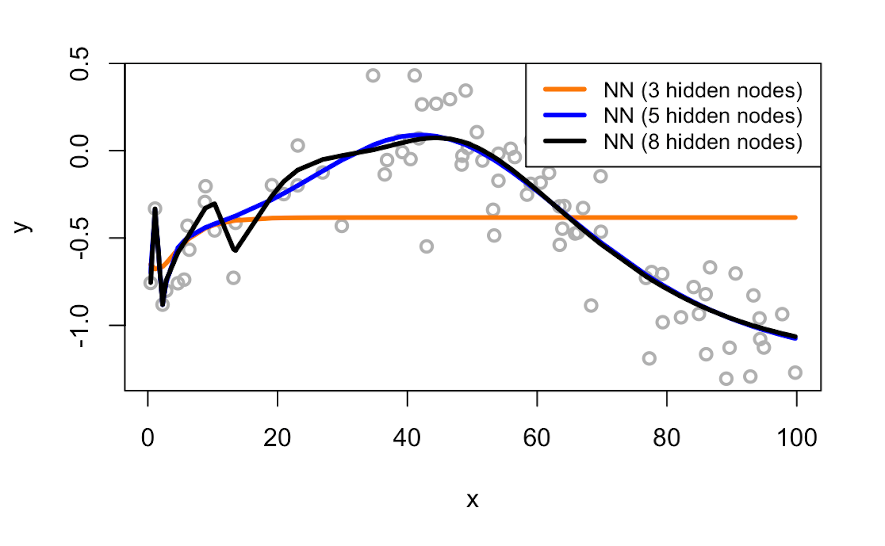
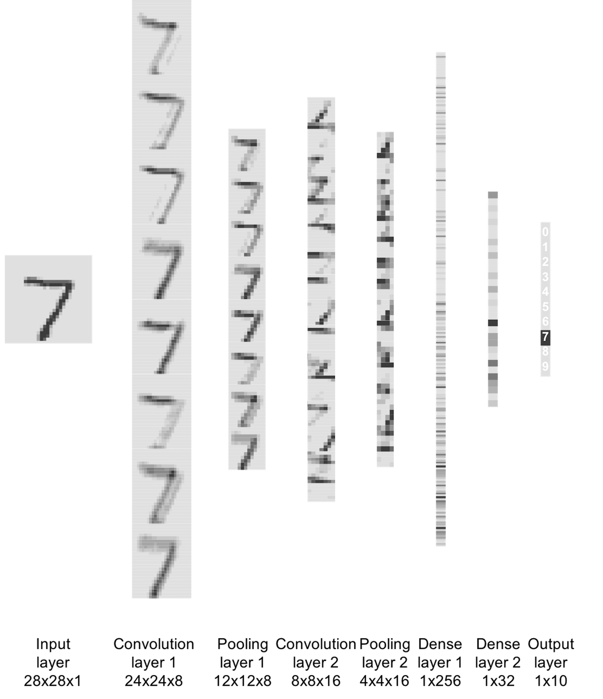

Deep learning
To know more about “deep learning” , we need to start with its name. The word “deep” is ambiguous but expressive, undetermined but significant. This inviting gesture may have a dazzling effect, but it is based on a specific reason: a deep neural network model is truly deep in terms of its architecture—from input variables to output variables there are many layers in between. Other than that, it is not different from other models in this book. The basic framework of learning as shown in Figure 2 and Eq. (1) in Chapter 2 still holds true for deep learning.
The word “deep” doesn’t imply that other models we have learned so far are not deep. Many models have been studied in great depth, such as the linear models245 Anderson, T. W., An Introduction to Multivariate Statistical Analysis, Wiley, 3rd edition, 2003. and the learning theory developed for the support vector machine246 Vapnik, V., The Nature of Statistical Learning Theory, Springer, 2000.. In this chapter, we will refer to deep learning, specifically to those neural network (NN) models that have many hidden layers, because for NN models we could take the word “deep” at face value—if a model looks deep, it is a deep model. This superficiality, however, builds on a solid foundation247 E.g., the Universal approximation theorem; please refer to Hornik, K., Approximation Capabilities of Multilayer Feedforward Networks, Neural Networks, Volume 4, Issue 2, Pages 251-257, 1991.: a neural network with a more complex architecture means a more complex form for \(f(x)\) in Eq. (1). In other words, this is an attractive proposal, since it suggests we can easily build up depth and capacity of the model by merely increasing its visual complexity. And there have been tools that allow users to drag ready-made modules and piece them together to create the architecture of the NN model they’d like to build, and automatically translate the architecture into its mathematical form and carry out the computational tasks for model training and prediction248 E.g., TensorFlow https://www.tensorflow.org/..
Rationale and formulation
An architecture means a function. We have mentioned in Chapter 2 that the data modeling methods seek explicit forms of \(f(x)\) in Eq. (1), while algorithmic modeling methods seek implicit forms. Deep models bend the two. It is like an algorithmic modeling method that you don’t need to write up the specific form of \(f(x)\), while on the other hand, in theory you could write up \(f(x)\) after you have had the architecture249 In this sense, it is also like the kernel trick used in the SVM model. Remember that in Chapter 7 we have seen that by using the kernel function in SVM, an implicit transformation of the variables is achieved, and we usually do not know what is the explicit form of \(\phi(x)\) the SVM model encodes, but in theory there is such a form of \(\phi(x)\)..
The architecture of a NN model could be quite expressive, i.e., Figure 175 shows an architecture of a neural network model with one layer that is flexible enough to include existing models such as the linear regression model, logistic regression model, and SVM, as shown in Table 53.
Figure 175: Architecture of a simple neural network model. The figure is drawn using Alex LeNail’s online tool: http://alexlenail.me/NN-SVG/index.html.
.](graphics/10_nn_architecture.png)
Table 53: Expression of some models using the architecture of a one-layer neural network in Figure 175
| Model | Activation Function \(\Phi\) | |
|---|---|---|
| Linear regression | Linear: \(\Phi(z)=z\) | \(\mathcal{L}(\boldsymbol{w})=\left(y-\sum_{i=1}^{p} w_{i} x_{i}\right)^2\) |
| Logistic regression | Sigmoid: \(\Phi(z)=\frac{1}{1-e^{-z}}\) | \(\mathcal{L}(\boldsymbol{w})=\log(1+\exp[-y\sum_{i=1}^{p} w_{i} x_{i}])\) |
| Support vector machine | Null: \(\Phi(z)=z\) | \(\mathcal{L}(\boldsymbol{w})=\max(0,1-y\sum_{i=1}^{p} w_{i} x_{i})\) |
The NN structure shown in Figure 175 is a basic form of NN architecture that is called the perceptron . As a basic form, it is a module that could be repeatedly used in different kinds of composition, e.g., in parallel, concatenation, or in a sequence. The basic forms are also called architectural primitives or foundational building blocks. Most deep architectures are built by combining these architectural primitives. Figures 176 and 177 show two examples. There have been many of those basic forms developed. Softwares such as TensorFlow build on this concept by allowing users to use graphic user interface (GUI) to compose the architecture of their deep networks using these building blocks250 For introduction of TensorFlow, readers may check out this book: Ramsundar, B. and Zadeh, R. TensorFlow for Deep Learning: from Linear Regression to Reinforcement Learning, O’Reilly Media, 2017..
As we have mentioned, for NN models there are theories showing that if a model looks deep, it is a deep model. The universal approximation theorem has shown that a NN model with one hidden layer could characterize all smooth functions. While there is no guarantee that in practice adding more layers will always be better, the theoretical results did imply that is the right direction.

Figure 176: Build more complicated NN models with a basic form

Figure 177: Build deeper NN models with basic forms and activation functions
Recall the XOR problem introduced in Chapter 7 as shown in Figure 121. With a slight modification of the problem to facilitate the presentation here, the dataset has \(4\) data points
\[ \begin{array}{l}{\boldsymbol{x}_{1}=(0,0), y_{1}=0}; \\ {\boldsymbol{x}_{2}=(0,1), y_{2}=1}; \\ {\boldsymbol{x}_{3}=(1,0), y_{3}=1} ;\\ {\boldsymbol{x}_{4}=(1,1), y_{4}=0.}\end{array} \]
This is a typical nonlinear problem. A NN model with one hidden layer as shown in Figure 178 could solve this problem.

Figure 178: Architecture of a neural network with a hidden layer
For instance, for \(\boldsymbol{x}_{1}=(0,0)\), from the input layer to the first node (i.e., the upper one) in the hidden layer, we have
\[ 0 \times 1 + 0 \times 1 + 1 \times 0 = 0. \]
The value \(0\) provides the input for the activation function at the hidden node, and we have \(\Phi(0) = \max (0,0) = 0\).
From the input layer to the second node (i.e., the lower one) in the hidden layer, we have
\[ 0 \times 1 + 0 \times 1 + 1 \times -1 = -1. \]
The value \(-1\) provides the input for the activation function at the hidden node, and we have \(\Phi(-1) = \max (0,-1) = 0\).
Then, from the hidden layer to the output layer, we have
\[ 1 \times 0 - 2 \times 0 = 0. \]
Using the activation function at the output layer, \(\Phi(z) = z\), the final prediction correctly predicts
\[ y = 0. \]
We can follow the same process and see that the two-layer NN as shown in Figure 178 could solve the XOR problem.
How to read a deep net. Roughly speaking, there are three major efforts in developing deep learning models: to create basic forms, to design architectural principles or composition rules, and to design learning algorithms that can robustly and efficiently learn the parameters of the deep model using data251 A deep NN model has massive parameters, so learning these parameters from data had been a challenge in the past. Some contributed the recent revitalization of deep learning—as the neural network model had its “rise and fall” in the past decades—to a range of optimization tricks such as pretraining and dropout, the growth of computing power, and the availability of Big Data, all enabled the data-driven learning of a giant collection of parameters of a deep NN model.. Practical application of deep models is to make the network deeper by stacking these basic forms following some composition rules. From this perspective, it is not a surprise to see why it was quoted, “For reason in this sense is nothing but reckoning, that is adding and subtracting …”252 Hobbes, T., Leviathan. 1651., to explain the logic of designing neural networks in Raul Rojas’s book253 Rojas. R., Neural Networks: a Systematic Introduction. Springer, 1996..
We can take a look at the convolutional neural networks (CNN) as an example. The CNN is one popular deep NN model and is often used for learning from image data. Its architecture consists of a few basic forms and composition rules that are particularly developed for images.

Figure 179: Architecture of a CNN model
The CNN architecture shown in Figure 179 has two parts. The first part (i.e., everything before the last \(3\) layers) is to translate the image data into vectorized form and provides the input for the second part (i.e., the last \(3\) layers) that is a NN as we have discussed earlier. One basic form of CNN is the convolutional layer. The basic purpose of a convolutional layer is to transform the image into a feature map, as shown in Figure 180.
Figure 180: A convolutional layer aggregates spatially correlated information as a feature extraction process

Suppose that \(w_1=1\), \(w_2=2\), \(w_3=2\), \(w_4=1\) in Figure 180; Figure 181 further shows the computational details of how the convolutional layer works.
Figure 181: How the convolutional layer works.

The convolutional layer is good at exploiting the spatial structure254 I.e., if the entities that are close to each other are semantically related, it is a spatial structure. in its input data. Because of this, CNN is particularly useful for learning from image data, since for images the pixels close to one another are usually semantically related.
The max pooling layer is another basic form of CNN. Figure 182 shows how it works. The max pooling looks too simple an idea, but it works remarkably well. The real mystery when we look at a “simple” idea like this is why it was the max pooling that stood out among many other “simple” ideas. But there has been no conclusive theory to explain it255 To quote Andrew Ng in his online course for convolutional neural networks (https://www.coursera.org/learn/convolutional-neural-networks): “… the main reason people use max pooling is because it’s been found in a lot of experiments to work well … I don’t know of anyone who fully knows if that is the real underlying reason.”.
But one can compare the max pooling with the convolutional layer. One difference is that the parameters of a convolutional layer is learned from data, making it an adaptive and flexible form to a particular problem. The max pooling, however, is a fixed nonlinear transformation without parameters to learn. In other words, it has no computational cost. No wonder it is believed that one main function of the max pooling is to reduce the number of parameters of the deep NN model and to alleviate the computational cost. This would relieve some computational burden since a deep NN model has a massive number of parameters to be learned from data. Another aspect we should think of is that max pooling is good for image data. It may help increase the robustness of the model against translation invariance, i.e., to recognize an object, say, a cat, in an image, we need the algorithm to be resilient to the potential variation on angle or distance or any other factors that cause scale issues. Max pooling only keeps the “max” and discards the rest.
Figure 182: How the max pooling layer works

One can add as many convolutional layers or max pooling layers as needed when designing a CNN model, and the convolutional layers and the max pooling layer could be alternatively arranged as a pipeline to extract features from the image data, e.g., in Figure 179, there are \(2\) convolutional layers and \(1\) max pooling layer. It has been found in many cases that for the CNN to be successful, it needs to be made quite deep. For this reason, some consider the deep NN models a different species from NN models.
R Lab
The 6-Step R Pipeline for NN. Step 1 and Step 2 get the dataset into R and organize it in required format.
# Step 1 -> Read data into R workstation
library(RCurl)
url <- paste0("https://raw.githubusercontent.com",
"/analyticsbook/book/main/data/KR.csv")
data <- read.csv(text=getURL(url))
# str(data)
# Step 2 -> Data preprocessing
# Create X matrix (predictors) and Y vector (outcome variable)
X <- data$x
Y <- data$y
# Create a training data
train.ix <- sample(nrow(data),floor( nrow(data) * 4/5) )
data.train <- data[train.ix,]
# Create a testing data
data.test <- data[-train.ix,]Step 3 creates a list of models. For a NN model, important decisions are made on the design of the architecture, e.g., how many hidden layers and how many nodes in each hidden layer. For example, here, we create three NN models, all have one hidden layer but a different number of hidden nodes.
# Step 3 -> gather a list of candidate models
# NN model with one hidden layer and different # of nodes
# model1: neuralnet(y~x, data=data, hidden=c(3))
# model2: neuralnet(y~x, data=data, hidden=c(5))
# model3: neuralnet(y~x, data=data, hidden=c(8)) Step 4 uses cross-validation to evaluate the candidate models to identify the best model.
# Step 4 -> cross-validation for model evaluation
n_folds = 10 # number of folds
# the sample size, N, of the dataset
N <- dim(data.train)[1]
folds_i <- sample(rep(1:n_folds, length.out = N))
library(neuralnet)
# cv_mse records the prediction error for each fold
cv_mse <- NULL
for (k in 1:n_folds) {
# In each iteration of the n_folds iterations
test_i <- which(folds_i == k)
# This is the testing data, from the ith fold
data.test.cv <- data.train[test_i, ]
# Then, the remaining data form the training data
data.train.cv <- data.train[-test_i, ]
# Fit the neural network model with one hidden layer of 3
model1 <- neuralnet(y~x, data=data, hidden=c(3))
# Predict on the testing data using the trained model
pred <- compute (model1, data.test.cv)
y_hat <- pred$net.result
model1$y_hat <- y_hat
# get the true y values for the testing data
true_y <- data.test.cv$y
# mean((true_y - y_hat)^2): mean squared error (MSE).
# The smaller this error, the better your model is
cv_mse[k] <- mean((true_y - y_hat)^2)
}
mean(cv_mse)The result is shown below
# [1] 0.09439574 # Model1
# [1] 0.04433521 # Model2
# [1] 0.1142009 # Model3Obviously, model2 achieves the lowest prediction error.
Figure 183: Visualization of the three fitted models and the data
We can also visually examine the fitness of the three models in Figure 183 to see how well the three models fit the data.
# Use visual inspection to assist the model selection.
# Predict on the testing data using the trained model
pred <- compute(model1, data.train)
y_hat <- pred$net.result
model1$y_hat <- y_hat
# Predict on the testing data using the trained model
pred <- compute(model2, data.train)
y_hat <- pred$net.result
model2$y_hat <- y_hat
# Predict on the testing data using the trained model
pred <- compute(model3, data.train)
y_hat <- pred$net.result
model3$y_hat <- y_hat
plot(y ~ x, data = data.train, col = "gray", lwd = 2)
lines(data.train$x, model1$y_hat,lwd = 3, col = "darkorange")
lines(data.train$x, model2$y_hat,lwd = 3, col = "blue")
lines(data.train$x, model3$y_hat,lwd = 3, col = "black")
legend(x = "topright", legend = c("NN (3 hidden nodes)",
"NN (5 hidden nodes)", "NN (8 hidden nodes)"),
lwd = rep(3, 4), col = c("darkorange", "blue", "black"),
text.width = 32, cex = 0.85)Figure 184: Visualization of the architecture of the final model

Step 5 builds the final model. Figure 184 shows the architecture of the final model.
# Step 5 -> After model selection, build your final model
nn.final <- neuralnet(y~x, data=data.train, hidden=c(5)) #
plot(nn.final) # Draw the architecture of the NN modelStep 6 uses the final model for prediction.
# Step 6 -> Evaluate the prediction performance of your model
# Predict on the testing data using the trained model
pred <- compute(nn.final, data.test)
y_hat <- pred$net.result
# get the true y values for the testing data
true_y <- data.test$y
# mean((true_y - y_hat)^2): mean squared error (MSE).
# The smaller this error, the better your model is
mse <- mean((true_y - y_hat)^2)
print(mse)The 6-Step R Pipeline for CNN. Before starting the pipeline, let’s first install the Keras package.
install.packages("devtools") # install devtools
devtools::install_github("rstudio/keras") # install KerasStep 1 and Step 2 get the MNIST handwritten digit dataset into R and process the data in required format. The goal is to classify a handwritten number into one of the \(10\) classes (from \(0\) to \(9\)).
# Step 1 -> Read digits classification data
library(keras)
mnist <- dataset_mnist()
# Step 2 -> Data preprocessing
# code adapted from
# keras.rstudio.com/articles/examples/mnist_cnn.html
# Input image dimensions
img_rows <- 28
img_cols <- 28
num_classes <- 10
# The data, shuffled and split between training and testing sets
x_train <- mnist$train$x
y_train <- mnist$train$y
x_test <- mnist$test$x
y_test <- mnist$test$y
# Redefine dimension of train/test inputs
x_train <- array_reshape(x_train,
c(nrow(x_train), img_rows, img_cols, 1))
x_test <- array_reshape(x_test,
c(nrow(x_test), img_rows, img_cols, 1))
input_shape <- c(img_rows, img_cols, 1)
# Transform RGB values into [0,1] range
x_train <- x_train / 255
x_test <- x_test / 255
cat('x_train_shape:', dim(x_train), '\n')
cat(nrow(x_train), 'train samples\n')
cat(nrow(x_test), 'test samples\n')
# Convert class vectors to binary class matrices
y_train <- to_categorical(y_train, num_classes)
y_test <- to_categorical(y_test, num_classes)Step 3 creates different models. In deep learning, parameters that are determined before training a model are called hyperparameters . Hyperparameters for a CNN include number of layers, number of nodes for a layer, kernel size of a convolution layer256 E.g., in Figure 181 the kernel size is \(2\)., etc. Here we create three models with different kernel sizes for the convolution layers.
# Step 3 -> gather a list of candidate models
define_model <- function(kernel_size){
model <- keras_model_sequential() %>%
# convolution layer 1
layer_conv_2d(filters = 8,
kernel_size = c(kernel_size,kernel_size),
activation = 'relu',
input_shape = input_shape) %>%
# pooling layer 1
layer_max_pooling_2d(pool_size = c(2, 2)) %>%
# convolution layer 2
layer_conv_2d(filters = 16,
kernel_size = c(kernel_size,kernel_size),
activation = 'relu') %>%
# pooling layer 2
layer_max_pooling_2d(pool_size = c(2, 2)) %>%
# dense layers
layer_flatten() %>%
layer_dense(units = 32, activation = 'relu') %>%
layer_dense(units = num_classes, activation = 'softmax')
# Compile model
model %>% compile(
loss = loss_categorical_crossentropy,
optimizer = optimizer_adadelta(),
metrics = c('accuracy')
)
return(model)
}
# define three models
model_kernel_1 = define_model(kernel_size=2)
model_kernel_2 = define_model(kernel_size=3)
model_kernel_3 = define_model(kernel_size=5)Step 4 uses cross-validation to evaluate the candidate models to identify the best model.
# Step 4 -> Use cross-validation for model evaluation
# set upfunction for evaluating accuracy
cv_accuracy <- function(n_folds, kernel_size,x_train,y_train){
N <- dim(x_train)[1] # the sample size, N, of the dataset
folds_i <- sample(rep(1:n_folds, length.out = N))
accuracy_v <- NULL
for (k in 1:n_folds) {
# set up training and testing data
test_i <- which(folds_i == k)
x.train.cv <- x_train[-test_i,,,,drop=FALSE]
x.test.cv <- x_train[test_i,,,,drop=FALSE]
y.train.cv <- y_train[-test_i,,drop=FALSE ]
y.test.cv <- y_train[test_i,,drop=FALSE ]
model <- define_model(kernel_size)
model %>% fit(
x_train, y_train, batch_size = 128,
epochs = 2,validation_split = 0.2, verbose = 0
)
scores <- model %>% evaluate(
x.test.cv, y.test.cv, verbose = 0)
accuracy_v <- c(accuracy_v, scores[2])
}
return(accuracy_v)
}
# get average accuracy for each model
accuracy_v_kernel_1 <-
cv_accuracy(n_folds=2,kernel_size=2,x_train,y_train)
print(mean(accuracy_v_kernel_1))
accuracy_v_kernel_2 <-
cv_accuracy(n_folds=2,kernel_size=3,x_train,y_train)
print(mean(accuracy_v_kernel_2))
accuracy_v_kernel_3 <-
cv_accuracy(n_folds=2,kernel_size=5,x_train,y_train)
print(mean(accuracy_v_kernel_3))The result is shown below.
# [1] 0.9680667 # Model1
# [1] 0.9742167 # Model2
# [1] 0.9760833 # Model3Step 5 builds the final model based on all the training data.
# Step 5 -> After model selection, build your final model
model <- define_model(5)
model %>% fit(
x_train, y_train, batch_size = 128,
epochs = 2,validation_split = 0.2, verbose = 0
)Step 6 uses the final model for prediction.
# Step 6 -> Evaluate the prediction performance of your model
scores <- model %>% evaluate(
x_test, y_test, verbose = 0)
print(scores[2])To visualize the process of how this CNN model works, the following R code is used to visualize the output from each layer, shown in Figure 185.
Figure 185: Visualize the outputs from all layers of the CNN model
# visualize output for a layer
# use the first image from testing data
img <- x_test[1,,,]
plot(as.raster(img))
img <- x_test[1,,,,drop=FALSE]
# define function to plot an image
plot_image <- function(channel) {
rotate <- function(x) t(apply(x, 2, rev))
image(rotate(channel), axes = FALSE, asp = 1,
col = gray.colors(12))
}
# plot the testing image
plot_image( 1 - img[1,,,] )
# plot the output from the second layer
layer_number = 2
# print layer name
layer_name <- model$layers[[layer_number]]$name
print(layer_name)
layer_outputs <- lapply(model$layers[layer_number],
function(layer) layer$output)
activation_model <- keras_model(inputs = model$input,
outputs = layer_outputs)
# calculate the outputs from the layer for the image
layer_activation <- activation_model %>% predict(img)
# check dimension
print(dim(layer_activation))
# number of features
n_features <- dim(layer_activation)[[4]]
# image width
image_size <- dim(layer_activation)[[2]]
# number of columns and images per column
# (each column plots an image)
n_cols <- n_features
images_per_col <- 1 #
# plot n_cols of images
op <- par(mfrow = c(n_cols, images_per_col),
mai = rep_len(0, 4))
# plot each image
for (col in 0:(n_cols-1)) {
col_ix <- col + 1
channel_image <- layer_activation[1,,,col_ix]
plot_image(1-channel_image)
}